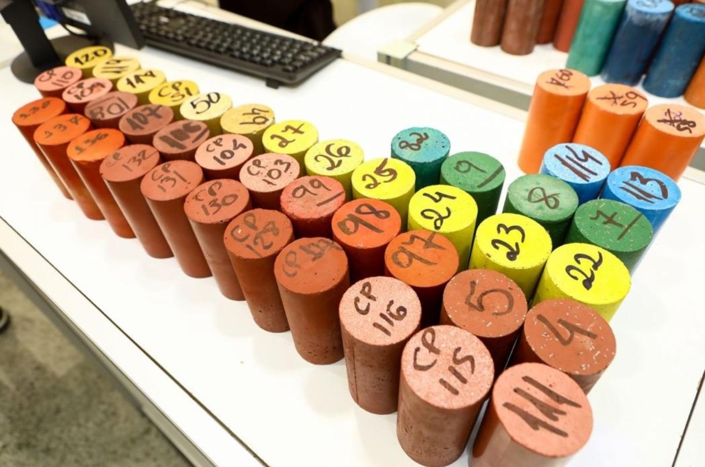

Sample extraction coordinated to the engineer's brief.
CARE provides precise hardened concrete sample extraction for builders, engineers and asset owners requiring laboratory testing and intrusive investigation of existing concrete structures. Depending on the engineer's brief, samples may include drilled concrete cores, depth-specific powder samples, concrete fragments, reinforcement exposure and steel coupons, with scanning completed beforehand where required to reduce the risk of striking reinforcement, post-tensioning or embedded services.
| Sample Type | Suitable for typical testing | Compliance |
|---|---|---|
| Concrete cores | Compressive strength, mass per unit volume, density, static elasticity, apparent volume of permeable voids and general condition assessment | AS 1012.14, AS 1012.12.2, AS 1012.12.1, ASTM C642, BS EN 12504-1, BS EN 12390 |
| Depth-specific powder samples | Acid-soluble chloride, water-soluble chloride, sulphate profiling and chemical contaminant analysis | AS 1012.20.1, AS 1012.20.2, ASTM C1218/C1218M, ASTM C1152/C1152M |
| Split cores | Carbonation depth assessment | Project-specific, AS 1012 visual |
| Concrete fragments | Petrographic, aggregate identification, deleterious diagnosis and forensic / failure investigation | Project-specific, ASTM C295/C295M |
| Reinforcement exposure and steel coupon samples | Reinforcement diameter check, cover verification, corrosion assessment, steel sample integrity | Project-specific (AS 1554, AS 4671 + project-specific) |
Note: CARE extracts, documents and preserves samples in accordance with the engineer's brief and the nominated laboratory requirements. Laboratory testing, certification and interpretation remain the responsibility of the testing laboratory and project engineer.